搜 hy
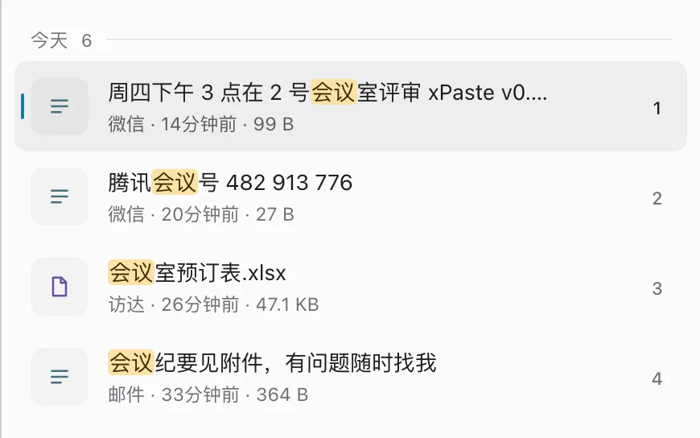
拼音、首字母都能搜
不用切输入法，打 huiyi 或 hy 就能找到“会议”。多音字也认得，yinhang 能找到“银行”，命中的字直接高亮。
xPaste 记下你在 macOS 和 Windows 上复制过的每一条内容。按 ⌘ Shift V 唤起，截图里的字、文件里的内容、拼音首字母都能搜，按 Enter 贴回刚才的应用。自带截图、贴图和翻译，macOS 上还能录屏。
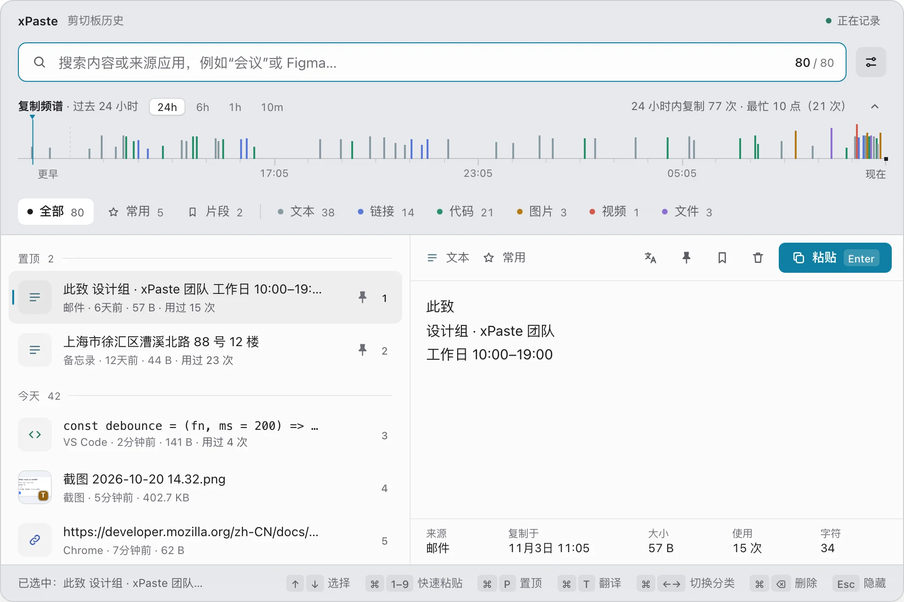
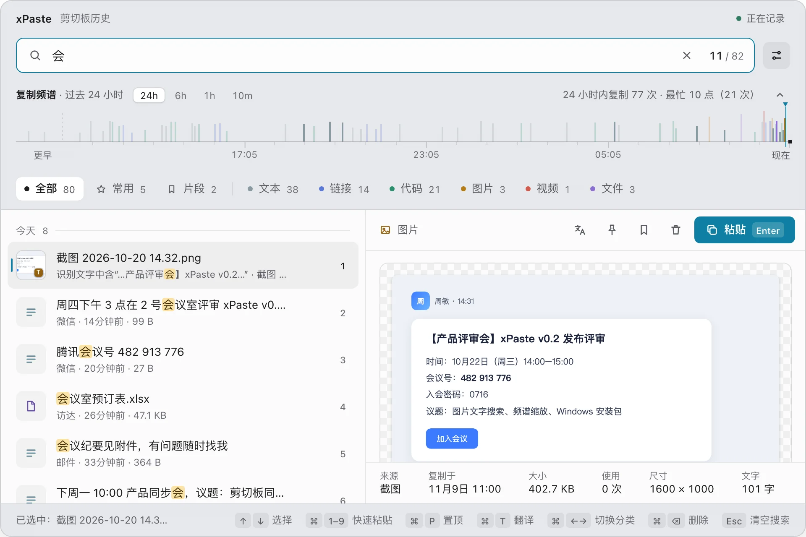
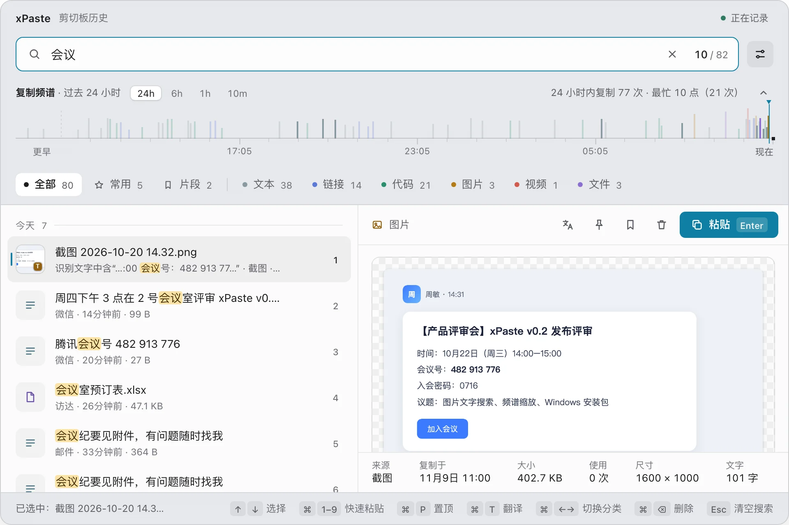
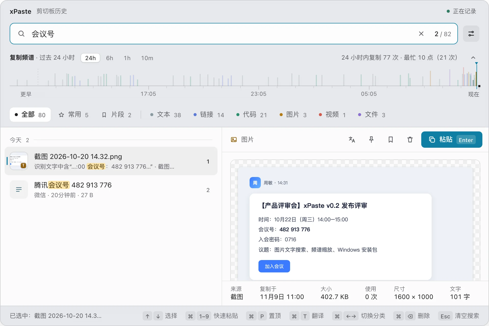
图片里的字平时搜不到，复制过的文件忘了名字就找不回。xPaste 把截图、图片和文件里的内容一起放进搜索。
截图和复制的图片在后台用系统自带的离线识别读出文字，不联网、不上传、不下载模型。命中时列表直接写明识别到的那句话，预览里可以看全文、一键复制。
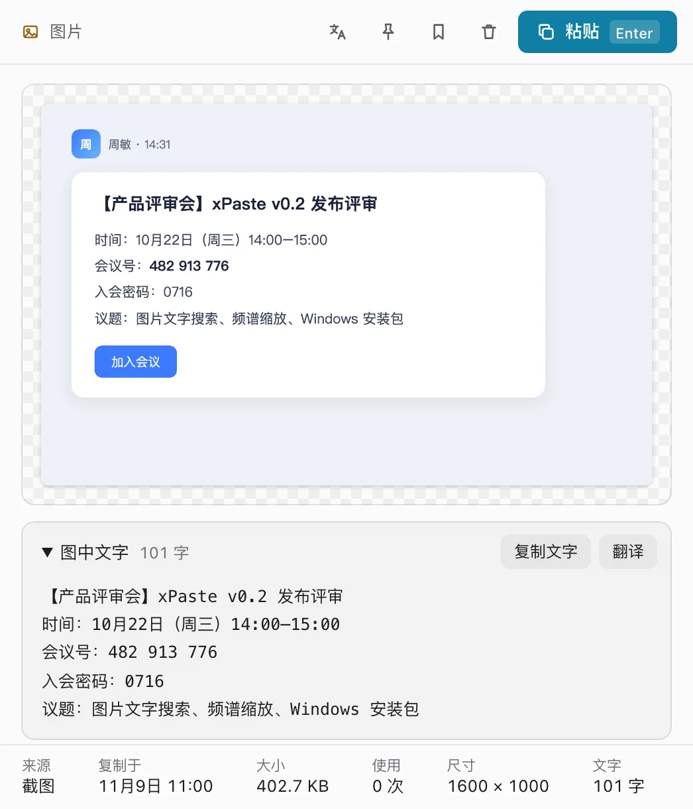
搜 hy

不用切输入法，打 huiyi 或 hy 就能找到“会议”。多音字也认得，yinhang 能找到“银行”，命中的字直接高亮。
搜 xPaste
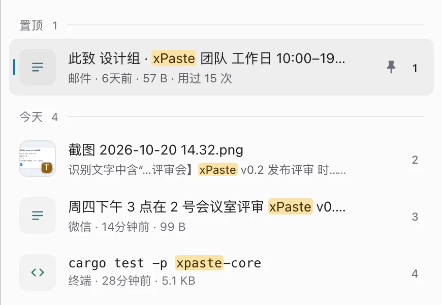
三个字符以上的搜索走本地全文索引，几百 MB 的历史文本也是毫秒级。连续输入会合并查询，不会越打越慢。
打开“搜索文本文件内容”后，txt、md、csv、json 和代码文件的内容也能搜，忘了文件名也找得回来。这个选项默认关着，由你决定要不要为此多占一点磁盘。
搜 灰度方案，这四个字写在文件里，不在文件名里
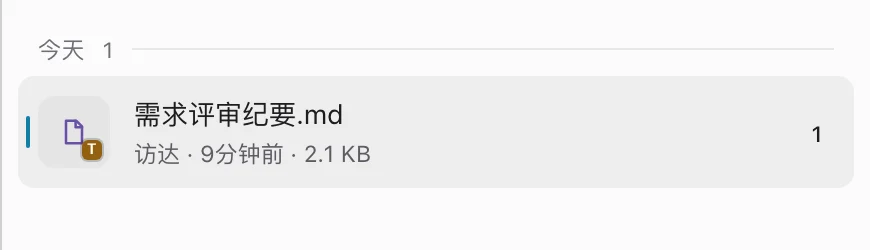
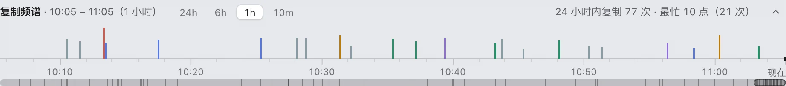
面板顶部的复制频谱，每条刻线是一次复制。滚轮放大到几分钟，24h、6h、1h、10m 一键切换；“常用”分类按使用次数自动归类。
没有账号、没有云同步、没有使用统计。来自密码管理器或被系统标记为敏感的内容默认不记录；日志里从不出现剪切板内容、标题、文件路径和搜索词。唯一会联网的是你手动发起的翻译。
macOS 与 Windows 共用同一份核心代码，交互、快捷键和外观一致，换电脑不用换工具。
macOS⌘ Shift VWindowsCtrl Shift V
截图、贴图和录屏都在 xPaste 里。截下的图进入历史，图里的字随后就能搜到；录下的视频也作为一条记录进入历史，可以直接粘贴。全部在本机处理。
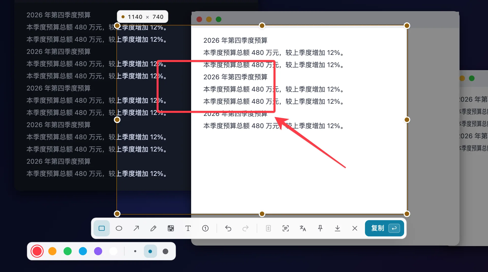
按 ⌥ Shift A 冻结所有屏幕，单击选中窗口、拖动框选，或按 F 选整块屏。1–7 依次是矩形、椭圆、箭头、画笔、马赛克、文字、序号。回车复制，截图进入历史；⌘ S 存到截图文件夹，O 只复制图里的文字，L 长截图：自己往下滚，旁边有预览，回车完成。
按 P 把截图钉在屏幕上，浮在其他窗口之上当参考。拖动换位置，滚轮缩放 20%–400%，双击关闭；右键可以复制、保存。退出 xPaste 后贴图不保留。
按 ⌥ Shift R，用同样的方式选区域，倒计时 3 秒后录成 MP4（30 或 60 fps，清晰度可选），可以带系统声音和麦克风（麦克风要 macOS 15）。菜单栏显示计时，再按一次停止，视频存进 ~/Movies/xPaste 并进入历史。
Windows 上截图是 Alt Shift A，保存是 Ctrl S，暂不支持录屏。macOS 第一次截图前要授予“屏幕录制”权限。
面板里、截图里、任何应用里选中的文字都能翻译，也可以自己写一段再翻。用 macOS 自带的离线系统翻译，或者接任意 OpenAI 兼容接口；每段译文都标出用的是哪种，翻译中也能临时换用另一种。
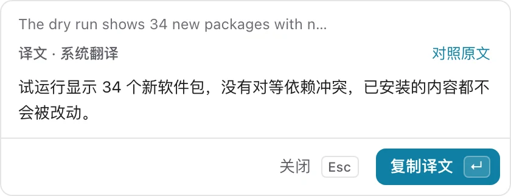
选中一条记录按 ⌘ T，译文显示在预览里并存下来，下次直接看。截图和文件也能翻，翻的是里面识别出的文字。
截图框选后按 T，先识别图里的字再翻译，译文卡片出现在选区旁，回车复制。
在浏览器、终端等任何应用里选中文字，按 ⌥ Shift T，译文出现在文字旁。点“对照原文”展开成两栏，可以直接改原文、换目标语言再翻。
点菜单栏图标的“翻译…”，或者不选文字直接按翻译快捷键。写一段中文按 ⌘ ↵ 翻成英文，再按一次复制，回到聊天框粘贴。没写完关掉，草稿还在。
系统翻译要 macOS 26，缺语言包时在 xPaste 里一键下载；AI 翻译接任意 OpenAI 兼容接口，接本机的 Ollama 时翻译不出本机。只在你按翻译时发送那一段文字。Windows 上是 Ctrl T 与 Alt Shift T，只能用 AI 翻译。
文字、链接、代码、图片、视频、文件，复制和截图都会自动记下，按类型归好。
面板出现在鼠标所在的显示器。直接打字搜索，拼音和首字母也行，图片和文件里的内容一起搜。Windows 上是 Ctrl + Shift + V。
贴回刚才的应用。macOS 需要开启“辅助功能”权限；没授权时会复制好并提示你按 ⌘ V。
复制过的一切，都留在你的电脑上。没有账号，没有云，也没有统计
~/Library/Application Support/xPaste/，Windows 存在 %APPDATA%\xPaste\下载的始终是最新版本。想看更新说明或旧版本，去版本历史。永久免费，不用注册账号；不想用了直接删掉，数据目录写得清清楚楚。
xattr -dr com.apple.quarantine /Applications/xPaste.appxattr -dr com.apple.quarantine /Applications/xPaste.app，再正常打开即可。之后的版本已签名并公证，不会再出现这个提示。